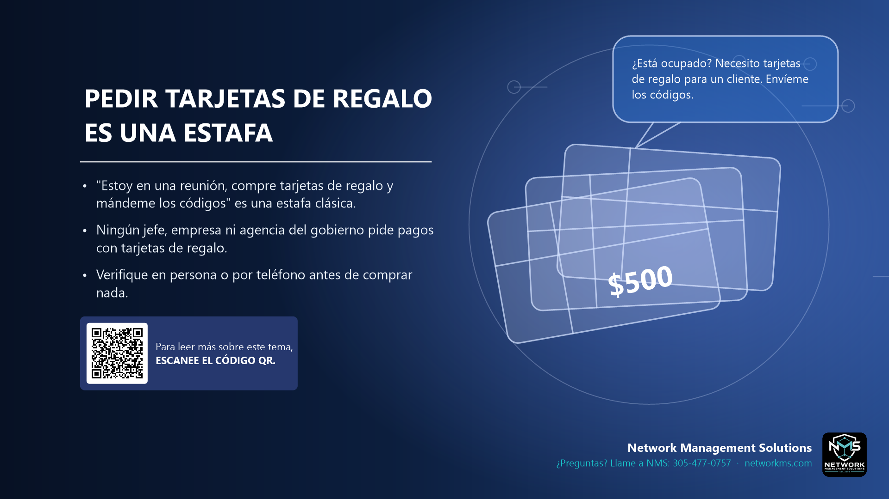

Pedir tarjetas de regalo es una estafa

- "Estoy en una reunión, compre tarjetas de regalo y mándeme los códigos" es una estafa clásica.
- Ningún jefe, empresa ni agencia del gobierno pide pagos con tarjetas de regalo.
- Verifique en persona o por teléfono antes de comprar nada.
El mensaje suele parecer del dueño o de un gerente, por correo o texto: "¿Está ocupado? Necesito un favor." Luego pide comprar tarjetas de regalo para un cliente o un evento y mandar fotos de los códigos.
Una vez enviados los códigos, el dinero se pierde. Las tarjetas de regalo no se pueden rastrear ni reembolsar.
Si recibe un pedido así, no responda el mensaje. Llame a la persona al número que conoce o pregúntele en persona.
¿Tiene dudas sobre un correo, mensaje o llamada? Llame a NMS antes de hacer clic: 305-477-0757 · networkms.com